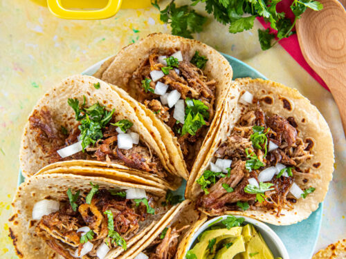

Street Tacos

Traditional Street Tacos
Just like you would find on a taco cart or your favorite Mexican restaurant
Ingredients:
- Tortillas
- Flank Steak
- Garlic paste, salt, pepper, chili powder
- 1 large white onion
- 1 bunch Cilantro
Steps:
- Run dry ingredients on steak and cook to desired temp
- Chop up steak into small pieces
- heat up tortillas in pan
- add all ingredients and enjoy